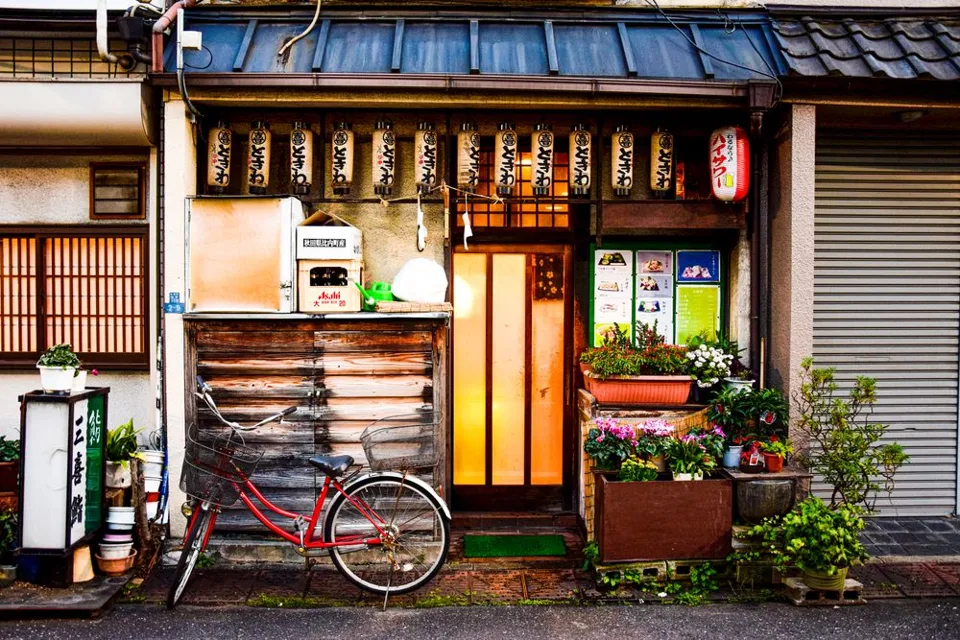
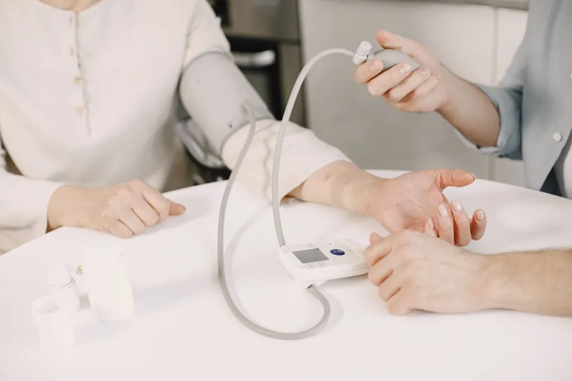
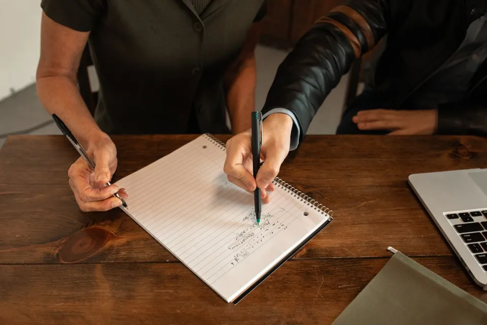

オンコールは月4回まで
オンコールは、常勤の看護師で順番に担当します。1人あたり月4回までです。待機の手当に加えて、出動した日は手当を足します。翌日の訪問は、出動の時間に合わせて調整します。
訪問看護師（正看護師）募集｜正職員・パート
こはる訪問看護ステーションは、看護師9名の小さなステーションです。オンコールは月4回まで。はじめての訪問看護でも、最初の1か月は先輩が同行します。
訪問看護は、ひとりで背負う仕事ではありません。こはるでは、毎朝のミーティングとチャットで、いつでも相談できるようにしています。
オンコールは、常勤の看護師で順番に担当します。1人あたり月4回までです。待機の手当に加えて、出動した日は手当を足します。翌日の訪問は、出動の時間に合わせて調整します。
その日の訪問の予定によって、自宅から利用者さんのお宅へ直行、最後のお宅から直帰できます。移動は電動自転車か社用車（軽自動車）です。
入職後の1か月は、先輩と一緒に訪問します。ひとりで訪問するのは、あなたと管理者が「大丈夫」と話し合ってからです。訪問看護がはじめての方も、半数以上が入職しています。

スクロールすると、1日が進みます。


訪問は1日4件ほどです。記録はタブレットで、訪問先でも入力できます。
「病棟では、退院したあとのことは分かりませんでした。いまは、同じ方に月に何度も会い、少しずつ表情が変わっていくのを見られます。最初の1か月の同行で、判断に迷ったときの相談のしかたも覚えられました。」
「子どもの送り迎えがあるので、9時半から15時半で働いています。訪問の件数は、勤務時間に合わせて決めてもらえます。」
個人の感想です。登場する人物は架空です。
待機した回数と、そのうち出動した回数を選ぶと、その月の手当の目安が出ます。
この月のオンコール手当の目安
待機 0回 × 3,000円 ＋ 出動 0回 × 5,000円
架空の条件による目安です。実際の条件は募集要項をご覧ください。| 項目 | 正職員 | パート |
|---|---|---|
| 職種 | 訪問看護師 | 訪問看護師 |
| 仕事の内容 | 利用者さんのお宅を訪問し、健康状態の確認、医療的な処置、服薬の管理、ご家族への相談などを行います。 | 同じ |
| 雇用の期間 | 期間の定めなし | 期間の定めなし |
| 試用期間 | 3か月（条件は本採用と同じ） | 3か月（条件は本採用と同じ） |
| 給与 | 月給 30万円〜38万円（経験により決めます）。内訳：基本給 25万〜31万円、訪問手当 3万円、資格手当 2万〜4万円 | 時給 1,900円〜2,300円 |
| オンコール | 待機 1回 3,000円、出動 1回 5,000円（月4回まで） | なし（希望があれば相談） |
| 賞与 | 年2回（業績により決めます） | なし |
| 勤務時間 | 9:00〜18:00（休憩60分） | 9:00〜18:00 の間で、週3日・1日4時間から |
| 時間外の仕事 | あり（月平均 8時間・架空の設定） | 原則なし |
| 休日 | 土日祝、年末年始（年間休日 120日以上） | 希望の曜日 |
| 休暇 | 有給休暇（入職6か月後 10日）、夏季休暇 3日 | 有給休暇（勤務日数による） |
| 必要な資格 | 正看護師の免許、普通自動車の運転免許（AT可） | 同じ |
| 保険 | 健康保険・厚生年金・雇用保険・労災保険 | 勤務時間により加入 |
| 交通費 | 実費を支給（月3万円まで） | 同じ |
| 勤務地 | こはる訪問看護ステーション（東京都内・架空）。変更の範囲：会社の定める事業所（当面は本ステーションのみ） | 同じ |
| 業務の変更の範囲 | 看護業務と、それに付随する業務 | 同じ |
| 受動喫煙の対策 | 屋内は禁煙 | 同じ |
| 募集する会社 | 株式会社こはるケア（架空） | 同じ |
このページの会社・人物・条件はすべて架空の見本です。
A. はい。最初の1か月は先輩と同行し、その後も毎朝のミーティングで相談できます。
A. 待機した日に出動するのは、平均で月1〜2回です（架空の設定）。電話での相談で済むことも多くあります。
A. 近いお宅は電動自転車で回ります。運転の練習が必要な方は、入職後に一緒に走ります。
A. できます。同行の期間を長めにとるなど、相談して決めます。
話を聞いてから決めて大丈夫です。見学のあとに、こちらから応募をすすめる連絡はしません。
見学を申し込む見本のため、送信はされません